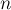

MAXimal
добавлено: 11 Jun 2008 11:14
редактировано: 21 Sep 2010 0:54
Содержание [скрыть]
Метод Ньютона (касательных) для поиска корней
Это итерационный метод, изобретённый Исааком Ньютоном (Isaak Newton) около 1664 г. Впрочем, иногда этот метод называют методом Ньютона-Рафсона (Raphson), поскольку Рафсон изобрёл тот же самый алгоритм на несколько лет позже Ньютона, однако его статья была опубликована намного раньше.
Задача заключается в следующем. Дано уравнение:
Требуется решить это уравнение, точнее, найти один из его корней (предполагается, что корень существует). Предполагается, что  непрерывна и дифференцируема на отрезке
непрерывна и дифференцируема на отрезке ![[a;b]](../tex2png/cache/2876eb358dba6f6f1347e3e76bed79d6.png) .
.
Алгоритм
Входным параметром алгоритма, кроме функции , является также начальное приближение — некоторое  , от которого алгоритм начинает идти.
, от которого алгоритм начинает идти.
Пусть уже вычислено  , вычислим следующим образом. Проведём касательную к графику функции в точке , и найдём точку пересечения этой касательной с осью абсцисс. положим равным найденной точке, и повторим весь процесс с начала.
, вычислим следующим образом. Проведём касательную к графику функции в точке , и найдём точку пересечения этой касательной с осью абсцисс. положим равным найденной точке, и повторим весь процесс с начала.
Нетрудно получить следующую формулу:
Интуитивно ясно, что если функция достаточно "хорошая" (гладкая), а находится достаточно близко от корня, то будет находиться ещё ближе к искомому корню.
Скорость сходимости является квадратичной, что, условно говоря, означает, что число точных разрядов в приближенном значении удваивается с каждой итерацией.
Применение для вычисления квадратного корня
Рассмотрим метод Ньютона на примере вычисления квадратного корня.
Если подставить , то после упрощения выражения получаем:
Первый типичный вариант задачи — когда дано дробное число , и нужно подсчитать его корень с некоторой точностью  :
:
double n; cin >> n; const double EPS = 1E-15; double x = 1; for (;;) { double nx = (x + n / x) / 2; if (abs (x - nx) < EPS) break; x = nx; } printf ("%.15lf", x);
Другой распространённый вариант задачи — когда требуется посчитать целочисленный корень (для данного найти наибольшее  такое, что ). Здесь приходится немного изменять условие останова алгоритма, поскольку может случиться, что начнёт "скакать" возле ответа. Поэтому мы добавляем условие, что если значение на предыдущем шаге уменьшилось, а на текущем шаге пытается увеличиться, то алгоритм надо остановить.
такое, что ). Здесь приходится немного изменять условие останова алгоритма, поскольку может случиться, что начнёт "скакать" возле ответа. Поэтому мы добавляем условие, что если значение на предыдущем шаге уменьшилось, а на текущем шаге пытается увеличиться, то алгоритм надо остановить.
int n; cin >> n; int x = 1; bool decreased = false; for (;;) { int nx = (x + n / x) >> 1; if (x == nx || nx > x && decreased) break; decreased = nx < x; x = nx; } cout << x;
Наконец, приведём ещё третий вариант — для случая длинной арифметики. Поскольку число может быть достаточно большим, то имеет смысл обратить внимание на начальное приближение. Очевидно, что чем оно ближе к корню, тем быстрее будет достигнут результат. Достаточно простым и эффективным будет брать в качестве начального приближения число , где  — количество битов в числе . Вот код на языке Java, демонстрирующий этот вариант:
— количество битов в числе . Вот код на языке Java, демонстрирующий этот вариант:
BigInteger n; // входные данные BigInteger a = BigInteger.ONE.shiftLeft (n.bitLength() / 2); boolean p_dec = false; for (;;) { BigInteger b = n.divide(a).add(a).shiftRight(1); if (a.compareTo(b) == 0 || a.compareTo(b) < 0 && p_dec) break; p_dec = a.compareTo(b) > 0; a = b; }
Например, этот вариант кода выполняется для числа за миллисекунд, а если убрать улучшенный выбор начального приближения (просто начинать с  ), то будет выполняться примерно миллисекунд.
), то будет выполняться примерно миллисекунд.